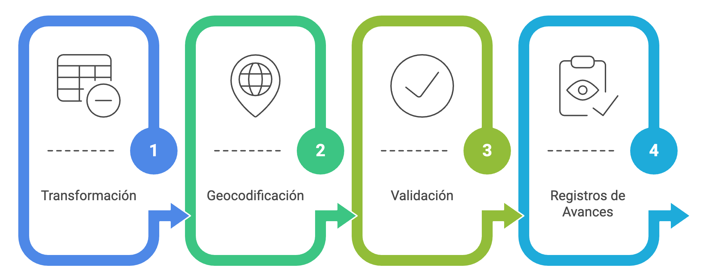
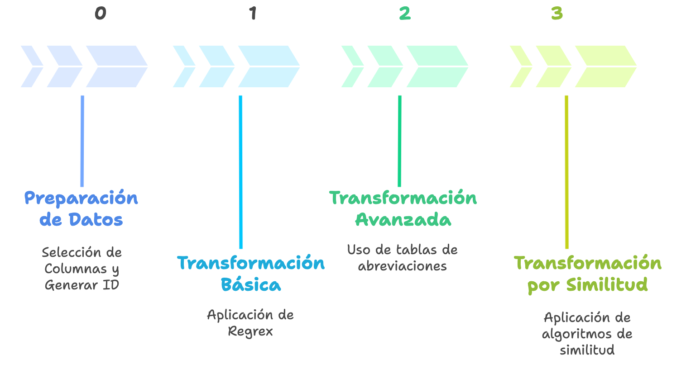
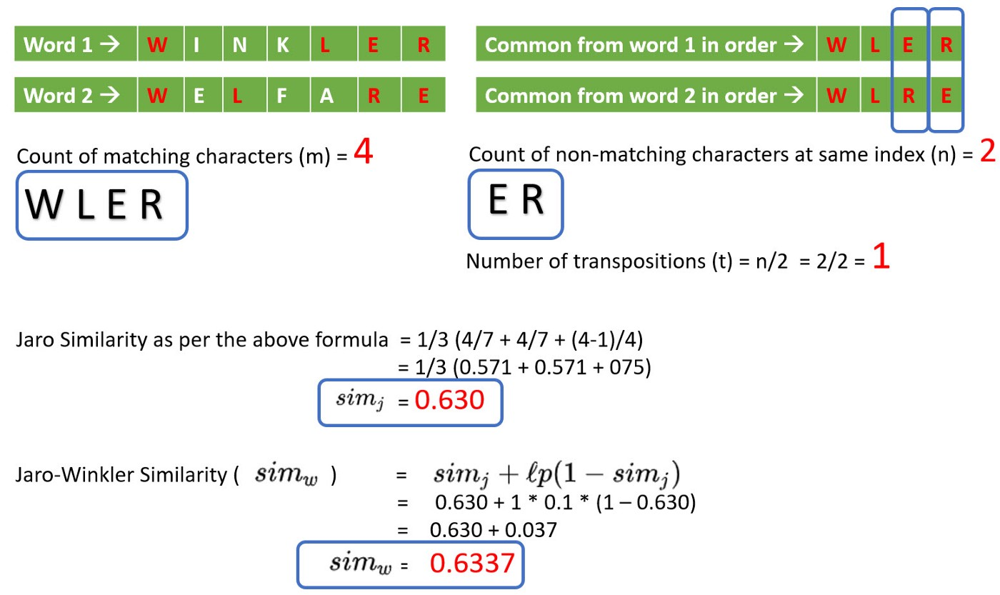
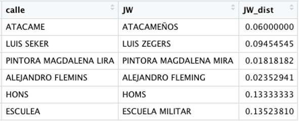

%%{init: {
"theme": "base",
"themeVariables": {
"fontFamily": "Inter, Segoe UI, Roboto, sans-serif",
"primaryTextColor": "#0f172a",
"lineColor": "#94a3b8",
"tertiaryColor": "#f8fafc"
},
"flowchart": { "htmlLabels": false, "curve": "basis" }
}}%%
flowchart TB
%% ====== Definición de estilos ======
classDef input fill:#E8F1FF,stroke:#3B82F6,stroke-width:1px,color:#0b3d91;
classDef s0 fill:#F8FAFC,stroke:#64748B,stroke-width:1px,color:#0f172a;
classDef s1 fill:#FFFFFF,stroke:#3B82F6,stroke-width:1.5px,color:#0f172a;
classDef s2 fill:#FFFFFF,stroke:#10B981,stroke-width:1.5px,color:#0f172a;
classDef s3 fill:#FFFFFF,stroke:#A3BE00,stroke-width:1.5px,color:#0f172a;
classDef decision fill:#FEF3C7,stroke:#F59E0B,stroke-width:1px,color:#713f12;
classDef qa fill:#F0F9FF,stroke:#0EA5E9,stroke-width:1px,color:#0c4a6e;
classDef finish fill:#ECFDF5,stroke:#16A34A,stroke-width:1.5px,color:#065f46;
classDef backlog fill:#FFF1F2,stroke:#FB7185,stroke-width:1px,color:#7f1d1d;
%% ====== Entrada ======
IN["Base con Direcciones Raw"]:::input
%% ====== [0] Preparación ======
subgraph S0 ["[0] Preparación"]
direction TB
s0b["Generación de ID"]:::s0
s0c["Selección de Columnas necesarias"]:::s0
end
%% ====== [1] Básica ======
subgraph S1 ["[1] Básica"]
direction TB
s1a["Transformación por Regex / funciones"]:::s1
s1b["Geocodificación #1"]:::s1
s1c{"Validación Espacial"}:::decision
s1d["Registro de Avance"]:::qa
end
%% ====== [2] Avanzada ======
subgraph S2 ["[2] Avanzada"]
direction TB
s2a["Transformación por tablas de abreviaturas"]:::s2
s2b["Geocodificación #2"]:::s2
s2c{"Validación Espacial"}:::decision
s2d["Registro de Avance"]:::qa
end
%% ====== [3] Similitud ======
subgraph S3 ["[3] Similitud"]
direction TB
s3a["Transformación por similitud de palabras"]:::s3
s3t{"¿score ≥ τ?"}:::decision
s3b["Geocodificación #3"]:::s3
REZ["Rezagados"]:::backlog
s3c{"Validación Espacial"}:::decision
s3d["Registro de Avance"]:::qa
end
%% ====== Salidas ======
OUT["Dirección geocodificada"]:::finish
REZ["Rezagados"]:::backlog
%% ====== Flujo ======
IN --> S0 --> S1
s1a --> s1b --> s1c
s1c -- "✔ válido" --> OUT
s1c -- "✖ → [2]" --> s1d --> S2
s2a --> s2b --> s2c
s2c -- "✔ válido" --> OUT
s2c -- "✖ → [3]" --> s2d --> S3
s3c -- "✔ válido" --> OUT
s3c -- "✖ inválido" --> s3d --> REZ
s3a --> s3t
s3t -- "Sí" --> s3b --> s3c
s3t -- "No" --> REZ
%% ====== Estilos de subgrupos ======
style S0 stroke:#64748B,stroke-width:1.5px,fill:#F8FAFC
style S1 stroke:#3B82F6,stroke-width:2px,fill:#F8FBFF
style S2 stroke:#10B981,stroke-width:2px,fill:#F6FFFB
style S3 stroke:#A3BE00,stroke-width:2px,fill:#F9FFE6
Geocoding
Obtener Coordenadas de Direcciones
Introducción
En el capítulo anterior trabajamos con información que ya estaba asociada a una comuna . Para representarla espacialmente bastaba con unir nuestra tabla de indicadores con una capa que contenía las geometrías comunales y en el mejor de los casos ya venía con las coordenadas por defecto.
Sin embargo, muchos registros administrativos no contienen coordenadas ni identificadores territoriales. En cambio, contienen información como:
“Presidente Errázuriz 3485, Las Condes”
Sabemos qué dirección fue registrada, pero todavía no sabemos exactamente dónde se encuentra en el espacio.
Aquí aparece un nuevo problema:
¿Cómo podemos transformar una dirección escrita como texto en una ubicación que pueda ser utilizada en un análisis espacial?
La respuesta es la geocodificación.
En contextos hispanos, la amplia variabilidad en los formatos de escritura de direcciones —abreviaciones, uso de diacríticos, numeraciones, referencias a kilómetros o parcelas, y complementos adicionales— exige un pipeline estructurado. Este debe integrar normalización determinística, diccionarios de abreviaciones y métodos de similitud, antes de consultar motores de geocodificación externos.
El proceso de geocodificación debe ser flexible y adaptable a los diferentes tipos y estructuras de direcciones. Por ello, resulta fundamental contar con un flujo de trabajo que permita transformar las direcciones en etapas sucesivas, mejorando gradualmente la calidad de los resultados. Esta organización facilita la trazabilidad, el control de calidad y la incorporación de ajustes o transformaciones adicionales cuando sea necesario. A continuación, se presenta una visión resumida del pipeline básico que trabajaremos en esta clase.
Geocodificar no es solamente obtener coordenadas
Un motor puede devolver una latitud y longitud y, aun así, entregar una ubicación incorrecta.
Por ejemplo, una dirección declarada en Temuco podría coincidir con una calle del mismo nombre localizada en Santiago.
Por ello, nuestro objetivo no será simplemente:
Dirección → Coordenadas
sino:
Dirección → Preparación → Coordenadas → Validación → Ubicación confiable
La calidad de un proceso de geocodificación depende tanto de la capacidad de encontrar coordenadas como de nuestra capacidad para verificar que esas coordenadas son coherentes con la información original.
Visión del Pipeline Básico
Dirección cruda
│
├─▶ [0] Preparación
│
├─▶ [1] Básica
│ ├─▶ Transformación por Regex Funciones
│ ├─▶ Geocodificación
│ ├─▶ Validación Espacial → ✔️ fin | ✖️ pasa a [2]
│ └─▶ Registro de Avance por Etapa
│
├─▶ [2] Avanzada
│ ├─▶ Transformación por Tablas de Abreviaturas
│ ├─▶ Geocodificación #2
│ ├─▶ Validación Espacial → ✔️ fin | ✖️ pasa a [3]
│ └─▶ Registro de Avance por Etapa
│
└─▶ [3] Similitud
├─▶ Transformación por Similitud de Palabras
├─▶ Score de Diferencias < τ → ✔️ Geocoding | ✖️ Rezagados
├─▶ Geocodificación #3
├─▶ Validación Espacial → ✔️ fin | ✖️ Rezagados
└─▶ Registro de Avance por Etapa y FinalPasos
Cada etapa del pipeline sigue la misma secuencia de pasos: transformación de la dirección, geocodificación, validación espacial de los resultados y, finalmente, Registro de Avances. A continuación, se describen en detalle estos pasos comunes a todas las etapas.

Transformación (varía según etapa)
Estandariza la cadena de entrada (corrección, normalización, limpieza), enriqueciendo con reglas y diccionarios según la etapa.
Geocodificación
Para realizar el proceso de geocodificación de direcciones es necesario contar con un motor de geocodificación que es un servicio o sistema que convierte direcciones físicas en coordenadas geográficas (latitud y longitud), o viceversa, un proceso conocido como “reverse geocoding”. Estos motores son esenciales para analizar datos espaciales cuando la información disponible está en formato de texto (como direcciones postales).
Los motores de geocodificación utilizan bases de datos geográficas y algoritmos de correspondencia para ubicar puntos específicos en un mapa a partir de descripciones textuales. Dependiendo del motor, pueden ofrecer características adicionales, como filtrado por región, cálculos de rutas, o integración con sistemas de tráfico en tiempo real. La siguiente tabla compara varios motores de geocodificación en cuanto a características, cobertura, precisión y si son gratuitos o de pago.
| Motor | Modelo | Cobertura | Consideraciones principales |
|---|---|---|---|
| Nominatim / OpenStreetMap | Abierto / gratuito | Global | Basado en OpenStreetMap. Requiere respetar políticas de uso y límites de consultas. Para procesos masivos puede ser conveniente utilizar una instancia propia. |
| Google Geocoding API | Comercial | Global | Alta cobertura y precisión. Requiere API y un plan de facturación vigente. |
| HERE Geocoding API | Comercial | Global | Permite geocodificación y búsqueda estructurada. Requiere API y está sujeto a cuotas de uso. |
| Mapbox Geocoding API | Comercial | Global | Integración con el ecosistema Mapbox y soporte para búsquedas geográficas. Requiere API y está sujeto a cuotas. |
| TomTom Geocoding API | Comercial | Global | Orientado también a aplicaciones de navegación y movilidad. Requiere API y está sujeto a cuotas de uso. |
Las cuotas, precios y condiciones de uso cambian con el tiempo. Siempre deben revisarse en la documentación oficial del proveedor antes de implementar un proceso masivo.
Para este curso no necesitas que memoricen límites de APIs; necesitas que comprendan que un geocoder es un servicio con una base de referencia, reglas de búsqueda y restricciones operacionales.
Variables clave al momento de geocodificar
- Cadena de consulta: dirección completa o tokens estructurados.
- País / región: restringen la búsqueda.
- Bounding box / viewbox: acota la búsqueda espacial.
- Nivel de detalle (addressdetails): define si devuelve calle, comuna, provincia, país.
- Número de resultados (limit): controla cuántas coincidencias se devuelven.
- Formato de salida (format): JSON, XML, etc.
- User-Agent / Email: requerido en OSM para trazabilidad.
- Rate limiting: número máximo de consultas permitido.
En la práctica se utilizarán motores libres basados en OpenStreetMap (OSM), principalmente Nominatim, respetando sus términos de uso y buenas prácticas.
Validación Espacial
Obtener coordenadas no garantiza que el resultado sea correcto. Después de cada intento de geocodificación debemos comprobar si la ubicación obtenida es consistente con la información territorial declarada originalmente.
En este ejercicio utilizaremos una validación Point-in-Polygon:
- el motor devuelve una coordenada;
- transformamos esa coordenada en un punto espacial;
- intersectamos el punto con los polígonos comunales;
- identificamos en qué comuna cayó;
- comparamos esa comuna con la declarada en el registro original.
Por ejemplo:
Dirección declarada: Temuco Punto geocodificado: Santiago
El motor logró encontrar una coordenada, pero el resultado no supera nuestra validación espacial.
Por esta razón distinguiremos entre:
- geocodificado: el motor devolvió coordenadas;
- validado: además, las coordenadas son territorialmente consistentes;
- rezagado: requiere un nuevo tratamiento o revisión.
Esta distinción será fundamental para medir la calidad del pipeline.
Registros de Avances
¿Cómo sabremos si el proceso está funcionando?
El proceso de geocodificación no se evaluará únicamente observando algunos puntos en un mapa. Utilizaremos métricas que permitan cuantificar su desempeño.
Total inicial
Número de registros que intentaremos geocodificar.
Aporte de una etapa
Porcentaje de la base original que logró ser correctamente validado durante esa etapa.
Aporte_k = \frac{\text{registros validados en etapa } k} {\text{registros originales}} \times 100
Cobertura acumulada
Porcentaje de registros originales que han sido correctamente resueltos después de todas las etapas ejecutadas hasta ese momento.
Cobertura = \frac{\sum \text{registros validados}} {\text{registros originales}} \times100
La comparación de estas métricas permitirá saber cuánto valor aporta cada transformación adicional al pipeline.
Etapas

Etapa 0. Preparación de Datos
- Seleccionar columnas necesarias y nombres estándar (p. ej.,
id,direccion_raw,comuna/municipio,region,pais). - Crear id único (UUID/Hash) para trazabilidad.
Etapa 1. Transformación Básica: Regex y funciones
- Normalización mínima: mayúsculas, quitar diacríticos, compactar espacios, estandarizar símbolos (
#,Nº,NUM). - Extracción de tokens:
tipo_via,nombre_via,numero,km,complementos. - Primer intento de geocodificación con cadena limpia.
Etapa 2. Transformación Avanzada: Tablas de abreviaciones
- Aplicar diccionarios muchos→uno (AV/AVDA/AVENIDA → AVENIDA; PJE/PSJE → PASAJE; O’HIGGINS ↔︎ OHIGGINS).
- Reintentar geocodificación con dirección estandarizada.
Etapa 3. Transformación por Similitud
- Generar candidatos desde un maestro de calles.
- Puntuar con Jaro–Winkler, Levenshtein/Damerau, Token Sort/Set, TF–IDF trigramas.
- Reintentar geocodificación con dirección ajustada por similitud.
Pipeline Completo
Geocodificación en R
Recursos Previos
Librerías que se utilizarán
library(sf)
library(dplyr)
library(tidygeocoder)
library(tidyr)
library(stringdist)
library(openxlsx)
library(janitor)
library(mapview)
library(stringr)Funciones Auxiliares
# Función Si no existe directorio lo crea
make_dir <- function(path){
if (!dir.exists(path)) dir.create(path, recursive = TRUE)
}E0: Preparación de Datos
%%{init: {
"theme": "base",
"themeVariables": {
"fontFamily": "Inter, Segoe UI, Roboto, sans-serif",
"primaryTextColor": "#0f172a",
"lineColor": "#94a3b8",
"tertiaryColor": "#f8fafc"
},
"flowchart": { "htmlLabels": false, "curve": "basis" }
}}%%
flowchart TB
%% ====== Definición de estilos ======
classDef input fill:#E8F1FF,stroke:#3B82F6,stroke-width:1px,color:#0b3d91;
classDef s0 fill:#F8FAFC,stroke:#64748B,stroke-width:1px,color:#0f172a;
classDef s1 fill:#FFFFFF,stroke:#3B82F6,stroke-width:1.5px,color:#0f172a;
classDef s2 fill:#FFFFFF,stroke:#10B981,stroke-width:1.5px,color:#0f172a;
classDef s3 fill:#FFFFFF,stroke:#A3BE00,stroke-width:1.5px,color:#0f172a;
classDef decision fill:#FEF3C7,stroke:#F59E0B,stroke-width:1px,color:#713f12;
classDef qa fill:#F0F9FF,stroke:#0EA5E9,stroke-width:1px,color:#0c4a6e;
classDef finish fill:#ECFDF5,stroke:#16A34A,stroke-width:1.5px,color:#065f46;
classDef backlog fill:#FFF1F2,stroke:#FB7185,stroke-width:1px,color:#7f1d1d;
%% ====== Entrada ======
IN["Base con Direcciones Raw"]:::input
%% ====== [0] Preparación ======
subgraph S0 ["[0] Preparación"]
direction TB
s0b["Generación de ID"]:::s0
s0c["Selección de Columnas necesarias"]:::s0
end
%% ====== Flujo ======
IN --> S0 --> E1
%% ====== Estilos de subgrupos ======
style S0 stroke:#64748B,stroke-width:1.5px,fill:#F8FAFC
style E1 stroke:#3B82F6,stroke-width:2px,fill:#F8FBFF
Objetivo: asegurar insumos limpios, trazables y reproducibles.
Crear Directorios y Variables
Definir Directorio de trabajo
setwd("geocoding")Crear Directorios por etapas
# crear un vector con rutas
path_etapas <- c(0:3) %>%
paste0("etapa_", .)
# Crear directorio en la tuta correspondiente
for (etapa in path_etapas) {
print(paste0("Creando carpeta en ", etapa))
make_dir(etapa)
}
# lo mismo anterior (programción funcional)
# purrr::map(.x = path_etapas, .f = make_dir) Crear Directorios para resultados finales
make_dir("resultados")Variable auxiliar para agregar los métricas
# sumaran aportes de geocificación por etapa mas adelante
aportes_etapas <- list()Lectura de Insumos
Polígonos de las Comunas de Chile para la validación espacial
comunas_polygonos <- readRDS("bases/shapes/Comunas_Chile.rds") %>%
select(COD_COMUNA_INE = COMUNA, NOM_COMUNA_INE = NOM_COMUNA,
COD_REGION_INE = REGION, NOM_REGION_INE = NOM_REGION) %>%
st_transform(4326) # transformar a coordenadas geográficasBase de establecimientos de salud de Chile, para geocodificar.
est_salud_raw <- read.xlsx("bases/original/Establecimientos_DEIS_MINSAL_22-07-2025.xlsx")
head(est_salud_raw, 3)| Código.Antiguo | Código.Vigente | Código.Madre.Antiguo | Código.Madre.Nuevo | Código.Región | Nombre.Región | Código.Dependencia.Jerárquica.(SEREMI./.Servicio.de.Salud) | Nombre.Dependencia.Jerárquica.(SEREMI./.Servicio.de.Salud) | Pertenencia.al.SNSS | Tipo.Establecimiento.(Unidad) | Ámbito.de.Funcionamiento | Nombre.Oficial | Certificación | Dependencia.Administrativa | Nivel.de.Atención | Código.Comuna | Nombre.Comuna | Vía | Número | Dirección | Teléfono | Fecha.Inicio.Funcionamiento | Tiene.Servicio.de.Urgencia | Tipo.de.Urgencia | Clasificación.Tipo.de.SAPU | LATITUD.[Grados.decimales] | LONGITUD.[Grados.decimales] | Tipo.de.Prestador.Sistema.de.Salud | Estado.de.Funcionamiento | Nivel.de.Complejidad | Tipo.de.Atención | Fecha.de.Incorporación.a.la.base |
|---|---|---|---|---|---|---|---|---|---|---|---|---|---|---|---|---|---|---|---|---|---|---|---|---|---|---|---|---|---|---|---|
| 26-704 | 126704 | NA | NA | 12 | Región De Magallanes y de la Antártica Chilena | 26 | Servicio de Salud Magallanes | Perteneciente al Sistema Nacional de Servicios de Salud | Hospital | Establecimiento de Salud | Hospital Comunitario Cristina Calderón de Puerto Williams | No Aplica | Servicio de Salud | Primario | 12201 | Cabo de Hornos | Calle | 246 | O'Higgins | 612453636 | 42314 | SI | Urgencia Hospitalaria (UEH) | No Aplica | -54.935209999999998 | -67.600390000000004 | Público | Vigente en operación habitual | Baja Complejidad | Atención Cerrada-Hospitalaria | NA |
| 26-204 | 126204 | NA | NA | 12 | Región De Magallanes y de la Antártica Chilena | 12 | SEREMI De Magallanes y la Antártica Chilena | No perteneciente al Sistema Nacional de Servicios de Salud | Hospital | Establecimiento de Salud | Hospital Naval (Puerto Williams) | No Aplica | Fuerzas Armadas y de Orden (FFAA) | Terciario | 12201 | Cabo de Hornos | Calle | 56 | Mc Intyre, Puerto Williams | 612624328 | 38716 | SI | Urgencia Hospitalaria (UEH) | No Aplica | -54.934373999999998 | -67.608895000000004 | Fuerzas Armadas y de Orden | Vigente en operación habitual | Mediana Complejidad | Atención Cerrada-Hospitalaria | 44841 |
| 26-412 | 126412 | NA | NA | 12 | Región De Magallanes y de la Antártica Chilena | 26 | Servicio de Salud Magallanes | Perteneciente al Sistema Nacional de Servicios de Salud | Posta de Salud Rural (PSR) | Establecimiento de Salud | Posta de Salud Rural Cameron | No Aplica | Municipal | Primario | 12303 | Timaukel | Calle | NA | Caserío de Camerón | 74613302 | 38716 | NO | No Aplica | No Aplica | -53.640549999999998 | -69.645849999999996 | Público | Vigente en operación habitual | Baja Complejidad | Atención Abierta-Ambulatoria | NA |
Agregar ID Secuencial
Función para crear ID
# Función para Crear ID
make_id <- function(base, iniciales, digitos = 6, separador = "_"){
# base: data frame al que se le agregará id
# iniciales: letras que comenzará ID (sugiere 2)
# digitos: cantidad de digitos 0 antes del número
# separador: Separador entre iniciales y los numeros consecutivos
ceros <- paste0("%0", digitos, "d")
base_res <- base %>%
dplyr::mutate(ID =paste0(iniciales, separador , sprintf(ceros, 1:nrow(base))))
return(base_res)
}Aplicación de la función
# aplicar función crea una columna de ID correlativo
est_salud <- make_id(est_salud_raw, iniciales = "ES", digitos = 7)
head(est_salud$ID)[1] "ES_0000001" "ES_0000002" "ES_0000003" "ES_0000004" "ES_0000005"
[6] "ES_0000006"Guardar Base Original con ID creado para trazabilidad, lo guardaremos en dos formatos rds y xlsx.
saveRDS(est_salud, "bases/original/original_id.rds")
write.xlsx(est_salud, "bases/original/original_id.xlsx")Selección de Columnas
Selecciona la columna esenciales para el proceso de Geocodificón, además aprovecha para corregir los nombres de columnas mediante la función clean_names() de la librería janitor.
# Selección de Columnas ---------------------------------------------------
est_salud_cols <- est_salud %>%
janitor::clean_names() %>% # limpiar nombres de columnas
select(id, codigo_vigente, tipo_establecimiento_unidad,
codigo_region, nombre_region, codigo_comuna, nombre_comuna,
via, numero, direccion)Para este ejemplo académicos utilizaremos un filtro de la para la región de Tarapacá, que tiene el código regional = 1. Lo anterior considerando que el proceso geocodificación puede tomar mucho tiempo dependiente de la cantidad registro que se necesita procesar.
# Filtro por Región -------------------------------------------------------
# esto se hace con fines didácticos y poder terminar
est_salud_reg <- est_salud_cols %>%
filter(codigo_region == 1)
total_0 = nrow(est_salud_reg)
head(est_salud_reg)| id | codigo_vigente | tipo_establecimiento_unidad | codigo_region | nombre_region | codigo_comuna | nombre_comuna | via | numero | direccion |
|---|---|---|---|---|---|---|---|---|---|
| ES_0002471 | 200540 | Clínica Dental | 1 | Región De Tarapacá | 01101 | Iquique | Calle | 630 | Serrano |
| ES_0003925 | 102413 | Posta de Salud Rural (PSR) | 1 | Región De Tarapacá | 01101 | Iquique | Calle | NA | Localidad de San Marcos |
| ES_0003926 | 200908 | Centro de Salud Privado | 1 | Región De Tarapacá | 01405 | Pica | Calle | NA | Faena minera Teck quebrada blanca, campamento 1700 |
Variable auxiliar para saber con cuantos registros comenzaremos
total_0 = nrow(est_salud_reg)
total_0[1] 99E1: Transformación Básica
%%{init: {
"theme": "base",
"themeVariables": {
"fontFamily": "Inter, Segoe UI, Roboto, sans-serif",
"primaryTextColor": "#0f172a",
"lineColor": "#94a3b8",
"tertiaryColor": "#f8fafc"
},
"flowchart": { "htmlLabels": false, "curve": "basis" }
}}%%
flowchart TB
%% ====== Definición de estilos ======
classDef input fill:#E8F1FF,stroke:#3B82F6,stroke-width:1px,color:#0b3d91;
classDef s0 fill:#F8FAFC,stroke:#64748B,stroke-width:1px,color:#0f172a;
classDef s1 fill:#FFFFFF,stroke:#3B82F6,stroke-width:1.5px,color:#0f172a;
classDef s2 fill:#FFFFFF,stroke:#10B981,stroke-width:1.5px,color:#0f172a;
classDef s3 fill:#FFFFFF,stroke:#A3BE00,stroke-width:1.5px,color:#0f172a;
classDef decision fill:#FEF3C7,stroke:#F59E0B,stroke-width:1px,color:#713f12;
classDef qa fill:#F0F9FF,stroke:#0EA5E9,stroke-width:1px,color:#0c4a6e;
classDef finish fill:#ECFDF5,stroke:#16A34A,stroke-width:1.5px,color:#065f46;
classDef backlog fill:#FFF1F2,stroke:#FB7185,stroke-width:1px,color:#7f1d1d;
%% ====== [1] Básica ======
subgraph S1 ["[1] Básica"]
direction TB
s1a["Transformación por Regex / funciones"]:::s1
s1b["Geocodificación #1"]:::s1
s1c{"Validación Espacial"}:::decision
s1d["Registro de Avance"]:::qa
end
%% ====== Salidas ======
OUT["Dirección geocodificada"]:::finish
%% ====== Flujo ======
E0 --> S1
s1a --> s1b --> s1c
s1c -- "✔ válido" --> OUT
s1c -- "✖ → [2]" --> s1d --> E2
%% ====== Estilos de subgrupos ======
style E0 stroke:#64748B,stroke-width:1.5px,fill:#F8FAFC
style S1 stroke:#3B82F6,stroke-width:2px,fill:#F8FBFF
style E2 stroke:#10B981,stroke-width:2px,fill:#F6FFFB
E1: Lectura de Etapa Anterior
Antes de iniciar la transformación básica, es importante heredar el estado de la etapa previa. Esto asegura trazabilidad y consistencia entre etapas. La estrategia es parametrizar el etapa_actual y etapa_anterior para que el mismo código sea reutilizable en todo el pipeline. Se añade una columna ETAPA que documenta el progreso y facilita trazabilidad posteriores.
nombre_base = "base_r1"
etapa_actual = 1
etapa_anterior = etapa_actual - 1
base <- readRDS(paste0("etapa_", etapa_anterior, "/",
nombre_base, "_e", etapa_anterior, ".rds"))%>%
mutate(ETAPA = etapa_actual)E1: Funciones de Limpieza Básica
Para el proceso de limpieza inicial, se puede escribir cualquier función que se considere adecuada según la naturaleza de las direcciones, teniendo siempre en cuenta el motor de geocodificación que se utilizará. Estos motores son sensibles al formato del texto, por lo que es crucial que las direcciones estén bien formateadas para mejorar la precisión del proceso de geocodificación. A continuación, presentamos un ejemplo de función.
La función limpieza() es útil cuando necesitamos estandarizar cadenas de texto eliminando tildes, convirtiendo todo a mayúsculas y limpiando ciertos caracteres no deseados. Su funcionamiento es el siguiente:
- Conversión a mayúsculas: Utiliza la función
stringr::str_to_upperpara convertir todas las letras en mayúsculas. - Eliminación de tildes: Mediante
chartr, las vocales con tilde (ÁÉÍÓÚ) son reemplazadas por sus equivalentes sin tilde (AEIOU), normalizando las vocales. - Eliminación de puntuación: Se eliminan todos los signos de puntuación excepto el apóstrofe (esto es útil para nombres como “O’Higgins”).
- Limpieza de caracteres no deseados: Elimina símbolos específicos, como el carácter º.
- Espacios: Usa
str_squishpara eliminar espacios innecesarios, como los que se encuentran al inicio o los que están repetidos entre palabras.
Esta función es muy útil para preparar texto en análisis de datos o cuando queremos asegurarnos de que las entradas de texto sean uniformes y fáciles de comparar.
Complementariamente, separar_num_letra() evita que “123A” sea interpretado como una sola palabra, y `eliminar_sn()``` previene confusión en direcciones “S/N”. Estas funciones incrementan la tasa de coincidencia en motores OSM.
# Función para dejar todo en mayúscula y sin tildes
limpieza <- function(x) {
x <- stringr::str_to_upper(x) # mayúsculas
x <- chartr("ÁÉÍÓÚ", "AEIOU", x)# eliminar tildes
x <- gsub("(?!')[[:punct:]]", "", x, perl=TRUE) #Excepción apostrofe de o'higgins
x <- gsub(pattern = 'º', "", x)
x <- stringr::str_squish(x) # eliminar espacios al comienzo y espacios repetidos
x <- ifelse(is.na(x), "", x)
x
}
# Separa números con letras unidos
separar_num_letra <- function(texto) {
texto %>%
str_replace_all("([0-9])([[:alpha:]])", "\\1 \\2") %>%
str_replace_all("([[:alpha:]])([0-9])", "\\1 \\2")
}
# Detectar y eliminar "SN", "S/N", " S/N " u otras variantes
eliminar_sn <- function(texto) {
str_replace_all(texto, "\\bS\\s*/?\\s*N\\b", "")
}E1: Aplicar Limpieza Básica
Con las funciones listas, se aplican a los campos de la dirección (CALLE, NUM, COMUNA, REGION). Luego se crea una columna CONSULTA, que concatena todo en un formato estándar. Esto es esencial porque motores como Nominatim requieren una cadena única, ordenada y jerárquica (número + calle + comuna + región + país).
Recomendación para nombres territoriales de Chile
Antes de construir la cadena de consulta, conviene revisar y estandarizar los nombres de las divisiones administrativas. El paquete de R ?var:library.territorial incorpora una tabla de referencia con los nombres y códigos únicos territoriales de las comunas, provincias y regiones de Chile. Permite validar comunas y regiones con validar_comunas() y validar_regiones(), corregir nombres comunales con errores ortográficos mediante limpiar_comunas() y completar la jerarquía territorial —incluida la provincia— con contextualizar(). Aplicar estas verificaciones antes de formar CONSULTA ayuda a reducir ambigüedades y mejora la consistencia territorial de la geocodificación.
base_e1 <- base %>%
mutate(
TIPO = limpieza(via),
CALLE = limpieza(direccion),
NUM = limpieza(numero),
COMUNA = limpieza(nombre_comuna),
REGION = limpieza(nombre_region)
) %>%
mutate(CALLE = separar_num_letra(CALLE)) %>%
mutate(CALLE = eliminar_sn(CALLE))Generar columna de CONSULTA
El siguiente código crea dos nuevas columnas en el marco de datos direcciones. La columna CONSULTA concatena el número, la calle, la comuna y la región en un solo campo. Esto es necesario para la geocodificación, ya que los motores de geocodificación requieren una dirección completa en un formato estándar para poder convertirla en coordenadas geográficas. (Ejemplo ver parámetros de búsqueda en nominatim)
base_e1 <- base_e1 %>%
mutate(CONSULTA = paste0(CALLE, " ", NUM, ", ",
COMUNA, ", ", REGION, ", CHILE")) | id | codigo_vigente | tipo_establecimiento_unidad | codigo_region | nombre_region | codigo_comuna | nombre_comuna | via | numero | direccion | ETAPA | TIPO | CALLE | NUM | COMUNA | REGION | CONSULTA |
|---|---|---|---|---|---|---|---|---|---|---|---|---|---|---|---|---|
| ES_0002471 | 200540 | Clínica Dental | 1 | Región De Tarapacá | 01101 | Iquique | Calle | 630 | Serrano | 1 | CALLE | SERRANO | 630 | IQUIQUE | REGION DE TARAPACA | SERRANO 630, IQUIQUE, REGION DE TARAPACA, CHILE |
| ES_0003925 | 102413 | Posta de Salud Rural (PSR) | 1 | Región De Tarapacá | 01101 | Iquique | Calle | NA | Localidad de San Marcos | 1 | CALLE | LOCALIDAD DE SAN MARCOS | IQUIQUE | REGION DE TARAPACA | LOCALIDAD DE SAN MARCOS , IQUIQUE, REGION DE TARAPACA, CHILE | |
| ES_0003926 | 200908 | Centro de Salud Privado | 1 | Región De Tarapacá | 01405 | Pica | Calle | NA | Faena minera Teck quebrada blanca, campamento 1700 | 1 | CALLE | FAENA MINERA TECK QUEBRADA BLANCA CAMPAMENTO 1700 | PICA | REGION DE TARAPACA | FAENA MINERA TECK QUEBRADA BLANCA CAMPAMENTO 1700 , PICA, REGION DE TARAPACA, CHILE |
E1: Geocodificación:
Se utilizará una librería llamada tidygeocoder que da acceso a los servicios de geocodificación en este caso Nominatim online. El procedimiento que se realizó en el proyecto difiere ya que se utilizó el motor de geocodificación local que ofrece mayor performance.
La función geocode() transforma la columna CONSULTA en coordenadas (latitude, longitude). Este paso es el primero en que podemos medir cobertura real: cuántas direcciones logran ser interpretadas directamente sin reglas adicionales.
library(tidygeocoder)
geocoding_e1 <- base_e1 %>%
geocode(CONSULTA, method = 'osm', lat = latitude , long = longitude)E1: Validación Espacial
Los resultados crudos del motor no son suficientes: es necesario verificar si el punto cae dentro de la comuna declarada. La función df2sf() convierte las coordenadas en objetos espaciales y st_join() las intersecta con polígonos comunales. Este paso actúa como filtro de calidad: si la dirección se geocodificó en una comuna distinta, debe pasar a la siguiente etapa del pipeline.
# convertir de Dataframe (con lat, lon) en objeto
df2sf <- function(df, lon ="lon", lat ="lat", crs_base = 4326) {
sf_object <- df %>%
dplyr::filter(!is.na(.data[[lon]])|!is.na(.data[[lat]])) %>%
sf::st_as_sf(coords = c(x = lon, y = lat),
crs = crs_base, agr = "constant")
return(sf_object)
}geocoding_sf_e1 <- df2sf(geocoding_e1, lon = "longitude", lat = "latitude")geocoding_sf_e1_val <- st_join(
x = geocoding_sf_e1,
y = comunas_polygonos,
join = st_within, # predicado binario
left = TRUE # conserva todos los puntos
)validados_e1 <- geocoding_sf_e1_val %>%
mutate(VALIDACION_COM = ifelse(COMUNA == NOM_COMUNA_INE, 1, 0)) %>%
filter(VALIDACION_COM == 1) %>%
select(!ends_with("INE"))| id | codigo_vigente | tipo_establecimiento_unidad | codigo_region | nombre_region | codigo_comuna | nombre_comuna | via | numero | direccion | TIPO | CALLE | NUM | COMUNA | REGION | CONSULTA | ETAPA | geometry | VALIDACION_COM |
|---|---|---|---|---|---|---|---|---|---|---|---|---|---|---|---|---|---|---|
| ES_0002471 | 200540 | Clínica Dental | 1 | Región De Tarapacá | 01101 | Iquique | Calle | 630 | Serrano | CALLE | SERRANO | 630 | IQUIQUE | REGION DE TARAPACA | SERRANO 630, IQUIQUE, REGION DE TARAPACA, CHILE | 1 | POINT (-70.13534 -20.21434) | 1 |
| ES_0003930 | 102416 | Posta de Salud Rural (PSR) | 1 | Región De Tarapacá | 01405 | Pica | Calle | NA | Matilla | CALLE | MATILLA | PICA | REGION DE TARAPACA | MATILLA , PICA, REGION DE TARAPACA, CHILE | 1 | POINT (-69.36135 -20.51382) | 1 | |
| ES_0003931 | 102304 | Centro de Salud Familiar (CESFAM) | 1 | Región De Tarapacá | 01405 | Pica | Calle | NA | Balmaceda | CALLE | BALMACEDA | PICA | REGION DE TARAPACA | BALMACEDA , PICA, REGION DE TARAPACA, CHILE | 1 | POINT (-69.32828 -20.49097) | 1 |
E1: Evaluación y Registros de avances
Para mantener un control riguroso, cada etapa registra:
- Cantidad de direcciones procesadas.
- Cobertura de la etapa (porcentaje sobre la base original).
- Cobertura acumulada hasta la etapa actual.
make_register <- function(registro, base, etapa) {
registro[[paste0("etapa_", etapa)]] <- nrow(base)
return(registro)
}aportes_etapas <- make_register(registro = aportes_etapas,
base = validados_e1,
etapa = etapa_actual)
aportes_etapas$etapa_1
[1] 69total_act <- aportes_etapas[[paste0("etapa_", etapa_actual)]]
# Suma acumulada de filas desde etapa_1 hasta etapa_actual
totales_acumulados <- sum(unlist(aportes_etapas))
cobertura_global <- round(totales_acumulados / total_0 * 100, 2)
aporte_actual <- round(total_act / total_0 * 100, 2)texto_reporte_e1 <- paste0(
sprintf("📌 REPORTE DE CALIDAD — ETAPA %d\n", etapa_actual),
sprintf("🔹 Total base original: %d\n", total_0),
sprintf("🔹 Total etapa actual: %d\n", total_act),
sprintf("🧮 Aporte actual (%% original): %.2f%%\n", aporte_actual),
sprintf("📊 Cobertura acumulada global: %.2f%% (%d registros acumulados)\n",
cobertura_global, totales_acumulados)
)
cat(texto_reporte_e1)📌 REPORTE DE CALIDAD — ETAPA 1
🔹 Total base original: 99
🔹 Total etapa actual: 69
🧮 Aporte actual (% original): 69.70%
📊 Cobertura acumulada global: 69.70% (69 registros acumulados)E1: Guardar los resultados
Se guardan resultados en formatos .rds y .shp para asegurar reproducibilidad y compatibilidad SIG.
# Guardar los Resultados ---------------------------------------------------
path_rds <- paste0("etapa_", etapa_actual, "/base_r1_e", etapa_actual, ".rds")
path_shape <- paste0("etapa_", etapa_actual, "/base_r1_e", etapa_actual, ".shp")
saveRDS(validados_e1,file = path_rds)
st_write(validados_e1, dsn = path_shape, delete_dsn = T)E2: Transformación Avanzada
%%{init: {
"theme": "base",
"themeVariables": {
"fontFamily": "Inter, Segoe UI, Roboto, sans-serif",
"primaryTextColor": "#0f172a",
"lineColor": "#94a3b8",
"tertiaryColor": "#f8fafc"
},
"flowchart": { "htmlLabels": false, "curve": "basis" }
}}%%
flowchart TB
%% ====== Definición de estilos ======
classDef input fill:#E8F1FF,stroke:#3B82F6,stroke-width:1px,color:#0b3d91;
classDef s0 fill:#F8FAFC,stroke:#64748B,stroke-width:1px,color:#0f172a;
classDef s1 fill:#FFFFFF,stroke:#3B82F6,stroke-width:1.5px,color:#0f172a;
classDef s2 fill:#FFFFFF,stroke:#10B981,stroke-width:1.5px,color:#0f172a;
classDef s3 fill:#FFFFFF,stroke:#A3BE00,stroke-width:1.5px,color:#0f172a;
classDef decision fill:#FEF3C7,stroke:#F59E0B,stroke-width:1px,color:#713f12;
classDef qa fill:#F0F9FF,stroke:#0EA5E9,stroke-width:1px,color:#0c4a6e;
classDef finish fill:#ECFDF5,stroke:#16A34A,stroke-width:1.5px,color:#065f46;
classDef backlog fill:#FFF1F2,stroke:#FB7185,stroke-width:1px,color:#7f1d1d;
%% ====== [2] Avanzada ======
subgraph S2 ["[2] Avanzada"]
direction TB
s2a["Transformación por tablas de abreviaturas"]:::s2
s2b["Geocodificación #2"]:::s2
s2c{"Validación Espacial"}:::decision
s2d["Registro de Avance"]:::qa
end
%% ====== Salidas ======
OUT["Dirección geocodificada"]:::finish
%% ====== Flujo ======
E1 --> S2
s2a --> s2b --> s2c
s2c -- "✔ válido" --> OUT
s2c -- "✖ → [3]" --> s2d --> E3
%% ====== Estilos de subgrupos ======
style E1 stroke:#3B82F6,stroke-width:2px,fill:#F8FBFF
style S2 stroke:#10B981,stroke-width:2px,fill:#F6FFFB
style E3 stroke:#A3BE00,stroke-width:2px,fill:#F9FFE6
E2: Lectura de Etapa Anterior
En esta etapa retomamos únicamente los registros rezagados que no lograron validarse en E1. Esto asegura eficiencia en el pipeline (evitamos reprocesar direcciones correctas) y permite llevar un histórico de avance. Se añade la columna ETAPA = 2 para documentar el progreso.
etapa_actual = 2
# Rezagados etapa anterior ------------------------------------------------
id_rezagados <- validados_e1$id
base_e2 <- base_e1 %>%
filter(!id %in% id_rezagados) %>%
mutate(ETAPA = etapa_actual)E2: Lectura de Tablas de Correcciones
Las direcciones contienen abreviaturas y errores comunes (“AVDA”, “PSJE”, “CASERIO DE”, etc.). En vez de codificar reglas fijas, utilizamos una tabla de referencia (CSV) con dos columnas: error y correcto. Esto permite actualizar y versionar las reglas fácilmente sin modificar el código.
# Lectura de Tabla de Correcciones ----------------------------------------
patrones_correccion <- read.csv("bases/correcciones/correccion-abreviaturas.csv",
header = T, sep = ";")
patrones_correccion| error | correcto | abrev |
|---|---|---|
| (\bAV(\.)?\b|\bAVDA(\.)?\b) | AVENIDA | AV |
| (\bSTA(\.)?\b) | SANTA | STA |
| (\bPJE(\.)?\b|\bPSJ(\.)?\b|\bPJ(\.)?\b|\bPSJE(\.)?\b) | PASAJE | PJE |
| (\bDR(\.)?\b)(\bDOC(\.)?\b) | DOCTOR | DR |
| (\bDEPTO(\.)?\b|\bDPTO(\.)?\b|\bDP(\.)?\b|\bDEPA(\.)?\b|\bDEP(\.)?\b) | DEPARTAMENTO | DEPTO |
| (\bPB(\.)?\b|\bPOB(\.)?\b|\bPOBLA(\.)?\b|\bPBL(\.)?\b) | POBLACION | PB |
| (\bPDTE(\.)?\b) | PRESIDENTE | PDTE |
| (\bCAM(\.)?\b) | CAMINO | CAM |
| (\bGRAL(\.)?\b) | GENERAL | GRAL |
| (\bBRIG(\.)?\b) | BRIGADIER | BRIG |
| (\bLT(\.)?\b) | LOTE | LT |
| (\bSTGO\b) | SANTIAGO | STGO |
| (\bPTO\b) | PUERTO | PTO |
| (\bPTE\b) | PUENTE | PTE |
| (\bFDO\b) | FUNDO | FDO |
| (\bEDO\b) | EDUARDO | EDO |
| (\bFCO\b) | FRANCISCO | FCO |
| (\bDR\b) | DOCTOR | DR |
| (\bSGTO\b) | SARGENTO | SGTO |
| (\bNVA\b) | NUEVA | NVA |
E2: Buscar y Reemplazar individualmente
Para depurar o analizar un caso específico, es útil probar reemplazos manuales con la función find_replace(). Así verificamos cómo se comporta la sustitución antes de aplicar el proceso masivo. En el ejemplo se fuerza un error intencional (“GENERAL” → “GRAL”) para ilustrar el efecto.
# Encuentra y reemplaza
find_replace <- function(patron, reemplazo, data_vector){
data_vector <- gsub(pattern = patron, replacement = reemplazo, data_vector)
return(data_vector)
}base_e2_replaced <- base_e2 %>%
mutate(
CALLE = find_replace(patron = "ALDEA DE ", reemplazo = "",
data_vector = CALLE),
CALLE = find_replace(patron = "CASERIO DE ", reemplazo = "",
data_vector = CALLE),
CALLE = find_replace(patron = "GENERAL", reemplazo = "GRAL",
data_vector = CALLE), #Error Forzado
)
# *OJO: find_replace(patron = "GENERAL", reemplazo = "GRAL"),
# se hace solo para analizar el reemplazo por tablaE2: Buscar y Reemplazar forma masiva
Con find_replace_table() aplicamos todas las reglas de la tabla de abreviaciones a la columna CALLE. Esta aproximación sistemática garantiza uniformidad en la estandarización y evita depender de reemplazos aislados.
find_replace_table <- function(data, col, ref_table) {
col <- rlang::ensym(col) # más limpio que enquo
data %>%
mutate(
!!col := purrr::reduce2(
.x = ref_table$error,
.y = ref_table$correcto,
.init = as.character(.[[rlang::as_string(col)]]),
.f = function(acc, patron, reemplazo) {
gsub(patron, reemplazo, acc, ignore.case = TRUE)
}
)
)
}base_e2_mod_ab <- find_replace_table(data = base_e2_replaced,
col = "CALLE",
ref_table = patrones_correccion)E2: Geocodificación
Una vez corregidas las direcciones, volvemos a formar la cadena CONSULTA y ejecutamos la geocodificación. La expectativa es que, gracias a las abreviaciones normalizadas, el motor OSM (Nominatim) reconozca más casos que en la etapa anterior.
base_e2_mod_ab <- base_e2_mod_ab %>%
mutate(CONSULTA = paste0(CALLE, " ", NUM, ", ",
COMUNA, ", ", REGION, ", CHILE"))# geocode the addresses
geocoding_e2 <- base_e2_mod_ab %>%
geocode(CONSULTA, method = 'osm', lat = latitude , long = longitude)E2: Validación Espacial
Al igual que en E1, transformamos los resultados en puntos y verificamos su pertenencia a la comuna esperada con st_within. Esta consistencia metodológica permite comparar métricas entre etapas y medir el valor agregado de las correcciones.
geocoding_sf_e2 <- df2sf(geocoding_e2, lon = "longitude", lat = "latitude")
geocoding_sf_e2_val <- st_join(
x = geocoding_sf_e2,
y = comunas_polygonos,
join = st_within, # predicado binario
left = TRUE # conserva todos los puntos
)
validados_e2 <- geocoding_sf_e2_val %>%
mutate(VALIDACION_COM = ifelse(COMUNA == NOM_COMUNA_INE, 1, 0)) %>%
filter(VALIDACION_COM == 1) %>%
select(!ends_with("INE"))
# mapview(validados_e2)
validados_e2Simple feature collection with 10 features and 18 fields
Geometry type: POINT
Dimension: XY
Bounding box: xmin: -70.18742 ymin: -20.70268 xmax: -68.60153 ymax: -19.31362
Geodetic CRS: WGS 84
# A tibble: 10 × 19
id codigo_vigente tipo_establecimiento_…¹ codigo_region nombre_region
<chr> <dbl> <chr> <chr> <chr>
1 ES_0003928 102412 Posta de Salud Rural (… 1 Región De Ta…
2 ES_0003929 200751 Servicio de Urgencia R… 1 Región De Ta…
3 ES_0004000 200754 Servicio de Urgencia R… 1 Región De Ta…
4 ES_0004001 102402 Posta de Salud Rural (… 1 Región De Ta…
5 ES_0004003 102411 Posta de Salud Rural (… 1 Región De Ta…
6 ES_0004004 102410 Posta de Salud Rural (… 1 Región De Ta…
7 ES_0004006 102407 Posta de Salud Rural (… 1 Región De Ta…
8 ES_0004009 102408 Posta de Salud Rural (… 1 Región De Ta…
9 ES_0004010 102309 Centro de Salud Famili… 1 Región De Ta…
10 ES_0004011 200756 Servicio de Urgencia R… 1 Región De Ta…
# ℹ abbreviated name: ¹tipo_establecimiento_unidad
# ℹ 14 more variables: codigo_comuna <chr>, nombre_comuna <chr>, via <chr>,
# numero <chr>, direccion <chr>, TIPO <chr>, CALLE <chr>, NUM <chr>,
# COMUNA <chr>, REGION <chr>, CONSULTA <chr>, ETAPA <dbl>,
# geometry <POINT [°]>, VALIDACION_COM <dbl>E2: Evaluación y Registros de avances
Se genera un reporte automático que muestra la cobertura de esta etapa, su aporte relativo respecto a la base original y el acumulado global. En este punto es clave interpretar el salto en match rate respecto a E1 como evidencia de la efectividad de las correcciones.
aportes_etapas <- make_register(registro = aportes_etapas,
base = validados_e2,
etapa = etapa_actual)
aportes_etapas$etapa_1
[1] 69
$etapa_2
[1] 10total_act <- aportes_etapas[[paste0("etapa_", etapa_actual)]]
# Suma acumulada de filas desde etapa_1 hasta etapa_actual
totales_acumulados <- sum(unlist(aportes_etapas))
cobertura_global <- round(totales_acumulados / total_0 * 100, 2)
aporte_actual <- round(total_act / total_0 * 100, 2)
texto_reporte_e2 <- paste0(
sprintf("📌 REPORTE DE CALIDAD — ETAPA %d\n", etapa_actual),
sprintf("🔹 Total base original: %d\n", total_0),
sprintf("🔹 Total etapa actual: %d\n", total_act),
sprintf("🧮 Aporte actual (%% original): %.2f%%\n", aporte_actual),
sprintf("📊 Cobertura acumulada global: %.2f%% (%d registros acumulados)\n",
cobertura_global, totales_acumulados)
)
cat(texto_reporte_e2)📌 REPORTE DE CALIDAD — ETAPA 2
🔹 Total base original: 99
🔹 Total etapa actual: 10
🧮 Aporte actual (% original): 10.10%
📊 Cobertura acumulada global: 79.80% (79 registros acumulados)E2: Guardar los resultados
Finalmente, guardamos la salida en dos formatos: .rds (para continuar el pipeline en R) y .shp (para integración con software SIG). Esto garantiza reproducibilidad y compatibilidad multiplataforma.
path_rds <- paste0("etapa_", etapa_actual, "/base_r1_e", etapa_actual, ".rds")
path_shape <- paste0("etapa_", etapa_actual, "/base_r1_e", etapa_actual, ".shp")
saveRDS(validados_e2,file = path_rds)
st_write(validados_e2, dsn = path_shape, delete_dsn = T)E3: Transformación por Similitud
%%{init: {
"theme": "base",
"themeVariables": {
"fontFamily": "Inter, Segoe UI, Roboto, sans-serif",
"primaryTextColor": "#0f172a",
"lineColor": "#94a3b8",
"tertiaryColor": "#f8fafc"
},
"flowchart": { "htmlLabels": false, "curve": "basis" }
}}%%
flowchart TB
%% ====== Definición de estilos ======
classDef input fill:#E8F1FF,stroke:#3B82F6,stroke-width:1px,color:#0b3d91;
classDef s0 fill:#F8FAFC,stroke:#64748B,stroke-width:1px,color:#0f172a;
classDef s1 fill:#FFFFFF,stroke:#3B82F6,stroke-width:1.5px,color:#0f172a;
classDef s2 fill:#FFFFFF,stroke:#10B981,stroke-width:1.5px,color:#0f172a;
classDef s3 fill:#FFFFFF,stroke:#A3BE00,stroke-width:1.5px,color:#0f172a;
classDef decision fill:#FEF3C7,stroke:#F59E0B,stroke-width:1px,color:#713f12;
classDef qa fill:#F0F9FF,stroke:#0EA5E9,stroke-width:1px,color:#0c4a6e;
classDef finish fill:#ECFDF5,stroke:#16A34A,stroke-width:1.5px,color:#065f46;
classDef backlog fill:#FFF1F2,stroke:#FB7185,stroke-width:1px,color:#7f1d1d;
%% ====== [3] Similitud ======
subgraph S3 ["[3] Similitud"]
direction TB
s3a["Transformación por similitud de palabras"]:::s3
s3t{"¿score ≥ τ?"}:::decision
s3b["Geocodificación #3"]:::s3
REZ["Rezagados"]:::backlog
s3c{"Validación Espacial"}:::decision
s3d["Registro de Avance y FINAL"]:::qa
end
%% ====== Salidas ======
OUT["Dirección geocodificada"]:::finish
REZ["Rezagados"]:::backlog
%% ====== Flujo ======
E2 --> S3
s3c -- "✔ válido" --> OUT
s3c -- "✖ inválido" --> s3d --> REZ
s3a --> s3t
s3t -- "Sí" --> s3b --> s3c
s3t -- "No" --> REZ
%% ====== Estilos de subgrupos ======
style E2 stroke:#10B981,stroke-width:2px,fill:#F6FFFB
style S3 stroke:#A3BE00,stroke-width:2px,fill:#F9FFE6
En esta etapa de transformación de las direcciones, se compara cada dirección del conjunto de datos con un maestro de calles, que contiene un listado oficial o validado de nombres de calles. El objetivo es corregir posibles errores en la escritura de las direcciones, como faltas de ortografía o variaciones en los nombres de calles, que podrían afectar la precisión del proceso de geocodificación.
E3: Lectura de Etapa Anterior
Esta etapa trabaja exclusivamente con los rezagados de E2. La idea es concentrar el esfuerzo computacional en los casos más difíciles: direcciones que ni la limpieza básica ni las abreviaciones lograron resolver.
etapa_actual = 3
# Rezagados etapa anterior ------------------------------------------------
id_rezagados <- validados_e2$id
base_e3 <- base_e2 %>%
filter(!id %in% id_rezagados) E3: Lectura de Maestro de Calles Nacional
Para comparar las direcciones problemáticas, se requiere un maestro oficial de calles. Aquí utilizamos un extracto de OSM procesado y normalizado con la misma función de limpieza, lo que asegura que ambas bases estén en un formato comparable.
master_calles_osm <- readRDS("bases/osm/master_calles_osm_procesado.rds") %>%
select(CALLE = name,COMUNA, REGION) %>%
mutate(CALLE = limpieza(CALLE)) %>%
mutate(COMUNA = limpieza(COMUNA)) %>%
mutate(REGION = limpieza(REGION)) %>%
st_drop_geometry()E3: Función de reemplazar por similitud
Para realizar esta comparación y corrección, se utiliza la métrica de distancia Jaro-Winkler, un algoritmo que mide la similitud entre dos cadenas de texto. Este método asigna un valor de similitud que varía entre 0 y 1, donde 1 significa una coincidencia exacta. A diferencia de otros métodos de comparación, Jaro-Winkler favorece las coincidencias al principio de las cadenas, lo que es útil para corregir nombres de calles, ya que las primeras letras suelen ser más importantes en la coincidencia.

Mediante esta técnica, las direcciones incorrectas o mal escritas pueden ser ajustadas automáticamente para coincidir con los nombres oficiales, mejorando significativamente la precisión de la geocodificación posterior.

Referencias de algoritmos de distancias de textos (link)
Usamos el algoritmo Jaro-Winkler, que devuelve una medida de similitud entre 0 y 1. Este algoritmo da mayor peso a coincidencias en los primeros caracteres, lo que es especialmente útil en nombres de calles. Para nuestro caso realizaremos una función que busque candidatos en la misma comuna para acelerar el proceso, y para analizar la proximidad entre la calle original y candidato utilizaremos la función stringdist con el método = “jw”, donde la métrica que devuelve está entre 0 y 1, donde 0 es la coincidencia máxima significa sin diferencias. Referencias de la librería stringdist
# Función matcher con Jaro-Winkler
match_calle_jw <- function(data, maestro, col_calle = "CALLE",
col_comuna = "COMUNA", umbral = 0.1) {
# Asegurar nombres estándar
col_calle <- rlang::ensym(col_calle)
col_comuna <- rlang::ensym(col_comuna)
data %>%
rowwise() %>%
mutate(
# Filtra maestro por comuna
candidatos = list(
maestro %>%
filter(!!col_comuna == !!col_comuna) %>%
pull(!!col_calle)
),
# Calcula distancia con cada candidato
distancias = list(
stringdist(!!col_calle, candidatos, method = "jw")
),
# Encuentra índice del mejor candidato
idx_min = which.min(distancias),
JW = ifelse(length(idx_min) > 0, candidatos[[idx_min]], NA_character_),
JW_DIST = ifelse(length(idx_min) > 0, distancias[[idx_min]], NA_real_),
MATCH_OK = !is.na(JW_DIST) & JW_DIST <= umbral,
# Crea columna final reemplazada si supera umbral
CALLE_MATCH = ifelse(!is.na(JW_DIST) & JW_DIST <= umbral, JW, !!col_calle)
) %>%
ungroup() %>%
select(-c(candidatos, distancias, idx_min))
}- Si la distancia es menor o igual al umbral (p. ej.
0.15), consideramos que la calle fue corregida con éxito. - Si no, se conserva el valor original para auditoría o trazabilidad general. El objetivo es maximizar la recuperación de casos válidos sin introducir errores sistemáticos.
base_e3_mod_jw <- match_calle_jw(base_e3, master_calles_osm, umbral = 0.15)
base_e3_mod_jw %>% select(CALLE, JW:CALLE_MATCH)# A tibble: 20 × 5
CALLE JW JW_DIST MATCH_OK CALLE_MATCH
<chr> <chr> <dbl> <lgl> <chr>
1 LOCALIDAD DE SAN MARCOS MUNI… 1.83e- 1 FALSE LOCALIDAD …
2 FAENA MINERA TECK QUEBRADA BLANCA CAMPAM… RUTA… 2.89e- 1 FALSE FAENA MINE…
3 COPOSA HOSTAL PABELLON DEL INCA PASA… 2.39e- 1 FALSE COPOSA HOS…
4 GENERAL IBAÑEZ GENE… 5.55e-17 TRUE GENERAL IB…
5 INGLATERRA SECTOR LA PAMPA SALI… 2.04e- 1 FALSE INGLATERRA…
6 NACIONES UNIDAS NACI… 5.55e-17 TRUE NACIONES U…
7 SALVADOR ALLENDE SALV… 5.55e-17 TRUE SALVADOR A…
8 EL PILON SITIO B EL L… 1.88e- 1 FALSE EL PILON S…
9 PLAYA EL AGUILA PLAY… 5.55e-17 TRUE PLAYA EL A…
10 PLAYA EL AGUILA PLAY… 5.55e-17 TRUE PLAYA EL A…
11 RUTA A 16 KM 6 RUTA… 1.43e- 1 TRUE RUTA A16
12 BERNARDO O’HIGGINS 5° PISO OF 504505 BERN… 1.94e- 1 FALSE BERNARDO O…
13 LATORRE CON OBISPO LABBE CABO… 2.32e- 1 FALSE LATORRE CO…
14 ISAZA ISAAC 1.33e- 1 TRUE ISAAC
15 CAMINO A MAMIÑA CAMPAMENTO MINERO CERRO … CAMI… 2.43e- 1 FALSE CAMINO A M…
16 COMERCIO ESQUINA 18 DE SEPTIEMBRE COME… 2.53e- 1 FALSE COMERCIO E…
17 NO APLICA FUND… 1.80e- 1 FALSE NO APLICA
18 NACIONES UNIDAS NACI… 5.55e-17 TRUE NACIONES U…
19 SALVADOR ALLENDE SALV… 5.55e-17 TRUE SALVADOR A…
20 ORIENTE ESQUINA ACCESO LA TIRANA RUTA A… ORIE… 2.5 e- 1 FALSE ORIENTE ES…E3: Geocodificación
Con la nueva columna CALLE_MATCH, que contiene la calle corregida por similitud, se construye la cadena CONSULTA y se reintenta la geocodificación. De esta forma, cada dirección usa su mejor versión posible antes de considerarse “no geocodificable”.
base_e3_mod_jw <- base_e3_mod_jw %>%
mutate(CONSULTA = paste0(CALLE_MATCH, " ", NUM, ", ",
COMUNA, ", ", REGION, ", CHILE"))# geocode the addresses
geocoding_e3 <- base_e3_mod_jw %>%
geocode(CONSULTA, method = 'osm', lat = latitude , long = longitude)E3: Validación Espacial
Al igual que en las etapas anteriores, se convierte el resultado a puntos y se verifica si pertenecen a la comuna esperada. Este paso es crítico porque la similitud puede generar falsos positivos: direcciones que se parecen mucho pero están en otra comuna.
geocoding_sf_e3 <- df2sf(geocoding_e3, lon = "longitude", lat = "latitude")
mapview::mapview(geocoding_sf_e3)
geocoding_sf_e3_val <- st_join(
x = geocoding_sf_e3,
y = comunas_polygonos,
join = st_within, # predicado binario
left = TRUE # conserva todos los puntos
)
validados_e3 <- geocoding_sf_e3_val %>%
mutate(VALIDACION_COM = ifelse(COMUNA == NOM_COMUNA_INE, 1, 0)) %>%
filter(VALIDACION_COM == 1) %>%
select(!ends_with("INE"))
validados_e3Simple feature collection with 1 feature and 22 fields
Geometry type: POINT
Dimension: XY
Bounding box: xmin: -69.9302 ymin: -20.22115 xmax: -69.9302 ymax: -20.22115
Geodetic CRS: WGS 84
# A tibble: 1 × 23
id codigo_vigente tipo_establecimiento_u…¹ codigo_region nombre_region
<chr> <dbl> <chr> <chr> <chr>
1 ES_0003956 102221 Clínica 1 Región De Ta…
# ℹ abbreviated name: ¹tipo_establecimiento_unidad
# ℹ 18 more variables: codigo_comuna <chr>, nombre_comuna <chr>, via <chr>,
# numero <chr>, direccion <chr>, TIPO <chr>, CALLE <chr>, NUM <chr>,
# COMUNA <chr>, REGION <chr>, CONSULTA <chr>, ETAPA <dbl>, JW <chr>,
# JW_DIST <dbl>, MATCH_OK <lgl>, CALLE_MATCH <chr>, geometry <POINT [°]>,
# VALIDACION_COM <dbl>E3: Evaluación y Registros de avances
El reporte de calidad muestra el aporte marginal de E3 al match rate global. Lo importante aquí no es solo la cantidad de direcciones resueltas, sino también analizar los falsos positivos y decidir si el umbral debe ajustarse.
# Genera un registro por etapa
aportes_etapas <- make_register(registro = aportes_etapas,
base = validados_e3,
etapa = etapa_actual)
aportes_etapas$etapa_1
[1] 69
$etapa_2
[1] 10
$etapa_3
[1] 1total_act <- aportes_etapas[[paste0("etapa_", etapa_actual)]]
# Suma acumulada de filas desde etapa_1 hasta etapa_actual
totales_acumulados <- sum(unlist(aportes_etapas))
cobertura_global <- round(totales_acumulados / total_0 * 100, 2)
aporte_actual <- round(total_act / total_0 * 100, 2)
texto_reporte_e3 <- paste0(
sprintf("📌 REPORTE DE CALIDAD — ETAPA %d\n", etapa_actual),
sprintf("🔹 Total base original: %d\n", total_0),
sprintf("🔹 Total etapa actual: %d\n", total_act),
sprintf("🧮 Aporte actual (%% original): %.2f%%\n", aporte_actual),
sprintf("📊 Cobertura acumulada global: %.2f%% (%d registros acumulados)\n",
cobertura_global, totales_acumulados)
)
cat(texto_reporte_e3)📌 REPORTE DE CALIDAD — ETAPA 3
🔹 Total base original: 99
🔹 Total etapa actual: 1
🧮 Aporte actual (% original): 1.01%
📊 Cobertura acumulada global: 80.81% (80 registros acumulados)E3: Guardar los resultados
Finalmente, se almacenan los resultados en .rds y .shp. El shapefile es especialmente valioso porque permite abrir los puntos en un SIG y auditar manualmente los casos dudosos de similitud.
path_rds <- paste0("etapa_", etapa_actual, "/base_r1_e", etapa_actual, ".rds")
path_shape <- paste0("etapa_", etapa_actual, "/base_r1_e", etapa_actual, ".shp")
saveRDS(validados_e3,file = path_rds)
st_write(validados_e3, dsn = path_shape, delete_dsn = T)Consolidación y guardar los resultados resultados
Al finalizar el pipeline de geocodificación es necesario unificar los resultados de todas las etapas en un solo objeto. De esta manera, se obtiene una vista global que permite inspeccionar qué registros fueron resueltos en cada fase y disponer de un archivo final listo para análisis o visualización.
Consolidación con programación funcional
Para evitar cargar manualmente cada archivo, utilizamos programación funcional con purrr::map(). Primero definimos las rutas a los archivos .rds de cada etapa, luego los leemos en forma de lista y finalmente los unimos en un solo marco de datos. Esto permite mantener el proceso escalable y reproducible.
library(purrr) # programción funcional
paths_resultados <- 1:3 %>%
paste0("./etapa_", ., "/base_r1_e", . , ".rds")
# Leer los rds de forma independiente
archivos_rds_list <- paths_resultados %>% map(readRDS)
# archivos_rds_list
# Unir y seleccionar columnas de los Geocodficados Correctamente
resultados_sf <- archivos_rds_list %>%
map_df(~select(., id, ETAPA, CONSULTA))
resultados_sfSimple feature collection with 80 features and 3 fields
Geometry type: POINT
Dimension: XY
Bounding box: xmin: -70.21242 ymin: -20.70268 xmax: -68.60153 ymax: -19.0076
Geodetic CRS: WGS 84
# A tibble: 80 × 4
id ETAPA CONSULTA geometry
* <chr> <dbl> <chr> <POINT [°]>
1 ES_0002471 1 SERRANO 630, IQUIQUE, REGION DE T… (-70.13534 -20.21434)
2 ES_0003930 1 MATILLA , PICA, REGION DE TARAPAC… (-69.36135 -20.51382)
3 ES_0003931 1 BALMACEDA , PICA, REGION DE TARAP… (-69.32828 -20.49097)
4 ES_0003932 1 BALMACEDA , PICA, REGION DE TARAP… (-69.32828 -20.49097)
5 ES_0003933 1 SECTOR LA HUAYCA , POZO ALMONTE, … (-69.53125 -20.4506)
6 ES_0003937 1 LOS LAGOS 4320, ALTO HOSPICIO, RE… (-70.08414 -20.27807)
7 ES_0003938 1 SANTA ROSA , ALTO HOSPICIO, REGIO… (-70.09247 -20.28048)
8 ES_0003939 1 SANTA ROSA 3355, ALTO HOSPICIO, R… (-70.10543 -20.27265)
9 ES_0003940 1 SANTA ROSA 3355, ALTO HOSPICIO, R… (-70.10543 -20.27265)
10 ES_0003941 1 LOS ALAMOS , ALTO HOSPICIO, REGIO… (-70.09823 -20.26362)
# ℹ 70 more rowsInspección Visual
Una vez consolidada la base, resulta útil explorar visualmente los resultados en un mapa dinámico. Esto permite identificar rápidamente errores de ubicación y verificar la distribución espacial de las direcciones resueltas en cada etapa.
mapview(resultados_sf, zcol = "ETAPA")Guardado de resultados finales
Para asegurar reproducibilidad y facilitar la interoperabilidad, guardamos la base final tanto en formato .rds (para continuar análisis en R) como en .shp (para visualización y trabajo en software SIG como QGIS o ArcGIS).
#geocodificados
saveRDS(resultados_sf,file = "resultados/geocododed_v1.rds")
st_write(resultados_sf, dsn = "resultados/geocododed_v1.shp")¿Qué aprendimos?
Durante esta sesión desarrollamos un flujo reproducible para transformar direcciones administrativas en información espacial.
El proceso completo puede resumirse como:
Dirección cruda
↓
Preparar y normalizar
↓
Geocodificar
↓
Validar espacialmente
↓
Reintentar los casos no resueltos
↓
Registrar cobertura y calidad
↓
Consolidar resultadosLa principal idea de esta sesión es que:
Geocodificar no consiste solamente en encontrar coordenadas, sino en construir ubicaciones suficientemente confiables para ser utilizadas en análisis posteriores.
También aprendimos que diferentes problemas de calidad requieren diferentes estrategias. Las transformaciones simples permiten resolver una parte importante de los registros, mientras que los casos restantes pueden requerir reglas adicionales, diccionarios o técnicas de similitud.
Tip
Para reflexionar
Si un sistema logra asignar coordenadas al 95 % de las direcciones, pero solamente el 70 % pasa la validación territorial, ¿diríamos que el geocoding tuvo un 95 % o un 70 % de éxito?
La respuesta depende de qué entendamos por un resultado útil. En análisis territorial, encontrar una coordenada no es suficiente: necesitamos confiar en su ubicación.
Del punto a la superficie
El resultado de este capítulo es una colección de ubicaciones puntuales cuya calidad ha sido evaluada. Con ellas ya podemos responder dónde ocurre cada registro y representarlo como un objeto vectorial. Sin embargo, no todos los fenómenos territoriales se comprenden como objetos aislados: la temperatura, la contaminación, la elevación o la intensidad de ciertos eventos varían a lo largo de todo el espacio.
Ese cambio de pregunta requiere otra forma de representar el territorio. En el capítulo siguiente pasaremos de puntos y polígonos a una grilla de celdas. El modelo ráster nos permitirá describir coberturas continuas y, más adelante, servirá como soporte para estimar superficies a partir de observaciones puntuales.
Direcciones
↓ geocodificación y validación
Puntos confiables
↓ representación del territorio en celdas
Datos ráster
↓ estimación de valores o intensidades
Superficies espaciales